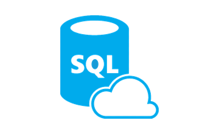
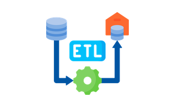
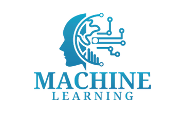
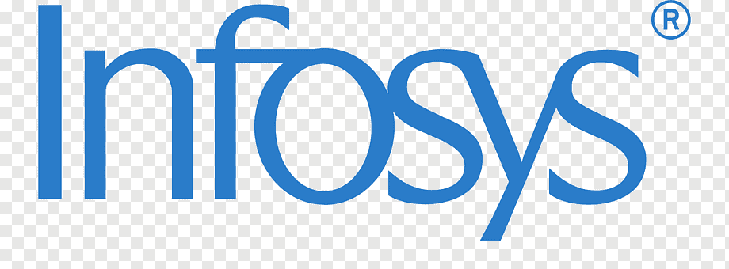
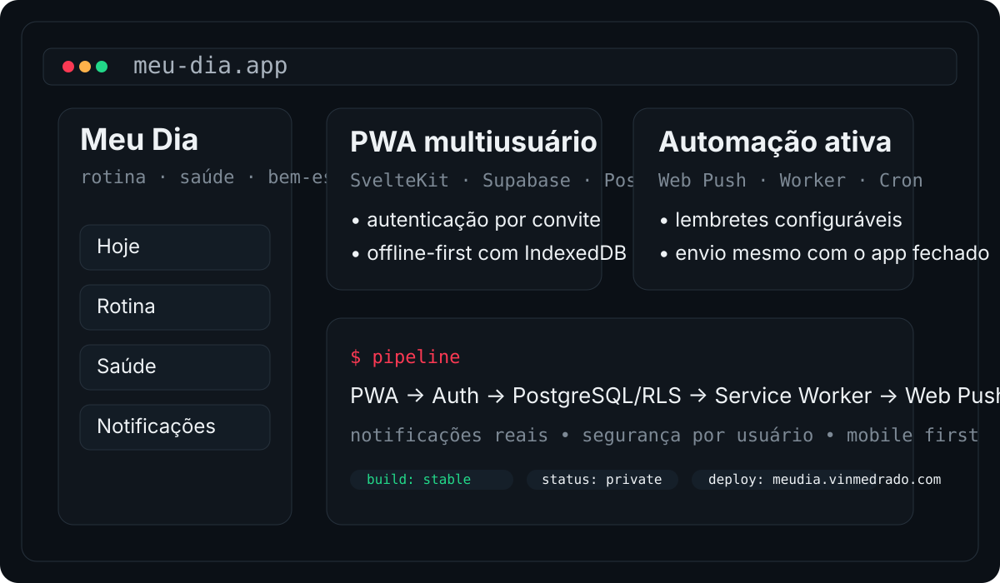

Tecnologías utilizadas en automatización, BI, integraciones y proyectos publicados.

SQLDatos / ETL
ETLPipelines
ML / OCRIDP / ModelosCifras del currículum: resultados de proyectos y entregas reales.
Trayectoria profesional y resultados contextualizados por tecnología e impacto.
- 97% de reducción en el informe diario de NPS: 13 min → ~20 s con Python, incluyendo consulta, comparación histórica, validaciones y generación de PowerPoint.
- Reestructuración de 4 cuadros de indicadores de Customer Experience y optimización del modelo Power BI de 158 MB → 56 MB, conservando el histórico.
- Validación previa a la carga de Dataflows y modelos semánticos de Brasil y Sudamérica, reduciendo el riesgo de publicar datos inconsistentes.
- Automatizaciones con Python, VBA y Access integradas con Outlook, SAP-MM y Oracle CRM para validar procesos y gestionar documentos; una solución de recepción fiscal motivó mi incorporación al área financiera.
- 81% de reducción del tiempo de validación: ~3 min → 34 s com Python + OCR/IDP + integrações corporativas.
- Motor de inteligencia documental con OCR y revisión humana para clasificar y validar CPF/CNPJ.
- Experiencia en operaciones fiscales y financieras, exportación, logística y ventas directas; más de 5.000 facturas procesadas en un mes en SAP sin errores, lo que contribuyó a mi promoción a Analista Financiero Júnior.

- Regularización de 20.000+ facturas de importación de vehículos y servicios mediante sistemas internos y SAP-MM.
Proyectos seleccionados por su relación con la automatización, las integraciones, los datos y la ingeniería de producto.
Applymize
AUTOMATIZACIÓN / WORKFLOWPlataforma que centraliza la recopilación de ofertas, la eliminación de duplicados, el análisis de afinidad y la gestión del embudo, manteniendo la revisión humana antes de las acciones finales.
 Ver proyecto →
Ver proyecto →Meu Dia
PWA / FULL STACKPWA multiusuario con SvelteKit, Supabase Auth, PostgreSQL/RLS, uso sin conexión, Web Push y autorización del lado del servidor.

Ver proyecto →Marketplace Seller Platform
APIs / AUTOMATIZACIÓNPlataforma con OAuth2 real de Mercado Libre, FastAPI, PostgreSQL multicliente y pipeline raw → staging → mart orquestado con Airflow.
 Ver proyecto →
Ver proyecto →VinanceOS
DATOS / MLPlataforma full stack con auditoría de decisiones mediante decision_id (instantáneas inmutables y versiones de modelo/reglas) y validación Walk-Forward con prueba automatizada contra la reoptimización, en un entorno simulado.
 Ver proyecto →
Ver proyecto →Automatización, datos y sistemas: trayectoria profesional y proyectos demostrables.
Santo André, Brasil · 6 años en el entorno GM Brasil / Stellantis · proyectos propios y demostraciones públicas.
GitHub: /vinmedrado